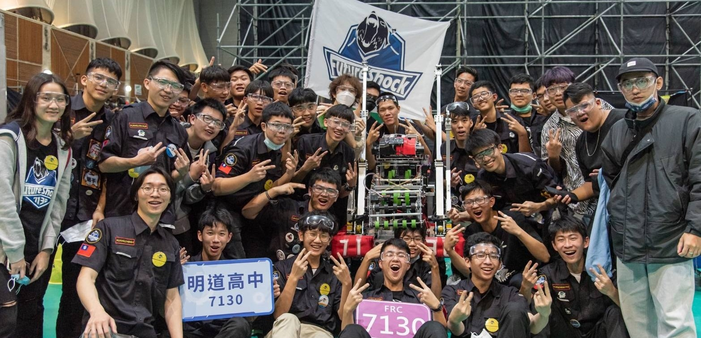

FIRST機器人競賽 （FRC）是一個針對全球高校舉辦的機器人競賽。 每年，來自各個高校的學生、教練和顧問組成參賽團隊，在六個星期的時間裡搭建重達54kg的機器人參加比賽完成任務。例如將球投進目標，將碟片飛入目標，欄杆懸掛，在平衡木上保持平衡。競賽的主題每年都會發生變化，以維持團隊的新鮮感和熱情，也給每一個團隊更加公平的競爭環境。同時，競賽團隊都會收到由幾部分組成的競賽標準（規則），同時被允許並且鼓勵他們訂立預算，購買或製作專門的機器人部件。 FIRST機器人競賽(FRC)是FIRST組織的五個機器人競賽項目中的一個。另外三個分別是FIRST少兒樂高聯賽(Jr.FLL)，FIRST樂高聯賽(FLL)，FIRST科技挑戰賽(FTC)，FIRST全球挑戰賽(FGC)。

歷屆成員
